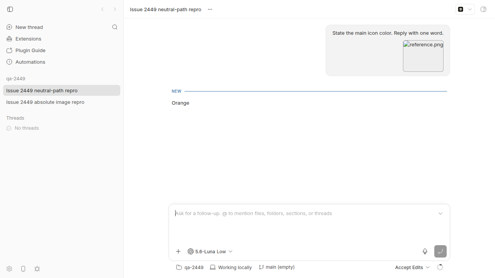

#2449 · Host-readable absolute --image paths render as broken thumbnails in project threads
Verdict: REPRODUCED · Root-cause confidence: high
1. TL;DR
Project threads show a broken thumbnail when the CLI sends an absolute host image path. The agent still receives and reads the correct image. The server stores the absolute path, while the app converts it into a project attachment URL. The attachment endpoint rejects this path because it is outside the project attachment directory.
2. Claims vs findings
| Claim from the issue | Status | Evidence |
|---|---|---|
| The CLI accepts an absolute image path, and the agent receives the image. | Verified | The spawn command accepted /tmp/reference.png. Codex read the image and replied Orange. See the spawn output and timeline. |
| The task card shows a broken image. | Verified | The browser reported complete=true, naturalWidth=0, and naturalHeight=0. See the browser facts. |
| The app rewrites the absolute path as a project attachment URL. | Verified | The browser requested /api/v1/projects/proj_jn27cw7h2x/attachments/content?path=%2Ftmp%2Freference.png. The endpoint returned HTTP 400. See the HTTP response. |
| An uploaded project-relative image works. | Verified | The upload returned a relative PNG path. The same content endpoint returned HTTP 200 and image/png. See the upload output and response headers. |
| The same contract affects spawn, tell, and fork. | Verified in code | The live test covered spawn. Tell passes --image into the shared input builder in actions.ts lines 417–458 and lines 526–537. Fork builds the same localImage input in fork.ts lines 48–62 and sends it in lines 108–125. |
| The failure also occurs when the execution host is remote. | Not tested live | The live test used one local execution host. The server still cannot read an absolute path from a different host. |
3. Environment
- bb commit:
ad79bbb5ec909524f8f281e62d860c588a86f332 - OS:
Linux 7.0.0-30-generic x86_64 GNU/Linux - Node:
v24.18.0, ABI137 - Provider:
codex-cli 0.150.1, modelgpt-5.6-luna, low reasoning - Revision app:
http://localhost:17536 - Revision server:
http://localhost:25536 - Revision host daemon:
http://127.0.0.1:33536 - Revision data directory:
~/.bb-dev/bb-report-worktrees-bb-report-2449-revise-ozh6sm-19baa5c82704
See the saved environment record.
4. Minimal reproduction
-
Create a valid orange PNG.
printf '%s' 'iVBORw0KGgoAAAANSUhEUgAAAAgAAAAICAYAAADED76LAAAACXBIWXMAAAPoAAAD6AG1e1JrAAAAE0lEQVR4nGP4v5ThPz7MMDIUAAAdwajBUg3sXwAAAABJRU5ErkJggg==' | base64 -d > /tmp/reference.png file /tmp/reference.png
-
Start an isolated development instance from a bb checkout.
export PATH="/home/sawyer/.nvm/versions/node/v24.18.0/bin:$PATH" test "$(node --version)" = "v24.18.0" pnpm install --frozen-lockfile --prefer-offline --package-import-method=copy pnpm exec turbo run build scripts/bb-dev-app current eval "$(scripts/bb-dev-app env)"
-
Create a scratch Git repository and a standard project.
scratch_repo=$(mktemp -d /tmp/bb-2449-repro-XXXXXX) git init -q "$scratch_repo" host_id=$(node packages/scripts/dist/commands/run-cli.js machine list --json \ | jq -r '.[] | select(.status == "connected") | .id' \ | head -n1) project_id=$(jq -n --arg path "$scratch_repo" --arg hostId "$host_id" '{name:"qa-2449",source:{type:"local_path",path:$path,hostId:$hostId}}' \ | curl -sS -X POST "$BB_SERVER_URL/api/v1/projects" -H 'content-type: application/json' --data-binary @- \ | jq -r .id) test -n "$project_id" printf 'host_id=%s\nproject_id=%s\n' "$host_id" "$project_id" Observed in the revision run: host_id=host_jpfwqibzuq project_id=proj_bnm9ev6cas -
Spawn a thread with the absolute image path.
node packages/scripts/dist/commands/run-cli.js thread spawn \ --project "$project_id" \ --provider codex \ --model gpt-5.6-luna \ --reasoning-level low \ --permission-mode accept-edits \ --title "Issue 2449 repro" \ --image /tmp/reference.png \ --prompt "State the main icon color. Reply with one word." \ --json
-
Open the new thread in the isolated app.
Expected: The card shows the orange image, and the agent replies "Orange". Actual: The agent replies "Orange", but the card shows a broken image named reference.png. The image element has naturalWidth=0 and naturalHeight=0. The attachment request returns HTTP 400: {"code":"invalid_request","message":"Attachment path escapes project directory"}

The focused test also fails on the base commit:
report_root="${REPORT_ROOT:-/home/sawyer/.bb/reports-work}"
cp "$report_root/issues/2449/repro/user-attachment-images.repro.test.ts" \
apps/app/src/lib/user-attachment-images.repro.test.ts
cd apps/app
pnpm exec vitest run src/lib/user-attachment-images.repro.test.ts --config vitest.config.ts
Expected: the source does not use the project attachment route.
Received: /api/v1/projects/proj_2449/attachments/content?path=%2Ftmp%2Freference.png
See the test source and test output.
5. Root cause
The CLI documents absolute host paths and converts them directly into localImage inputs. See spawn.ts lines 208–218 and helpers.ts lines 31–48.
The server permits absolute paths without an uploaded attachment. See attachments.ts lines 102–152. Thread creation passes request.input into provisioning in thread-create.ts lines 512–523. Provisioning appends that input to the client/turn/requested event in thread-provisioning.ts lines 234–253. The saved event confirms the absolute path. See the persisted event.
The host daemon also classifies an absolute path as readable. It passes that path to the provider without an attachment download. See prompt-attachments.ts lines 55–70 and lines 221–255. This path explains why the agent succeeds.
The app maps each stored image path through one resolver. The resolver checks projectId before it checks absolute paths. See ConversationAttachments.tsx lines 85–95 and user-attachment-images.ts lines 3–24.
The generated URL calls the project attachment route. That route only reads files inside the project attachment directory. See projects.ts lines 914–943 and attachments.ts lines 63–100. It correctly rejects /tmp/reference.png as an escape.
Mechanism: execution uses a host path, but display assumes a server attachment path. One stored field cannot satisfy both contracts.
The app added its project-first resolver in commit 53f79b77b. Commit c7b20f65a later documented host-readable absolute paths. That change did not add a durable display path.
No later commit on origin/main changes the relevant files. The base commit still contains the defect.
6. Proposed fix (first principles)
Normalize each absolute localImage before the server persists the prompt. Select the same execution host that will run the thread. Read the image through the existing authenticated host.read_file command. Enforce the image size limit and verify the returned size and hash. Store the bytes as a durable project attachment. Replace the absolute path with the returned project-relative path before event creation.
Apply the normalization to thread creation, tell, fork, deferred sends, and queued-message create or update paths. Keep HTTP, data, and blob URLs unchanged. Keep existing project-relative attachments unchanged. Keep absolute localFile behavior unchanged unless product policy changes it.
Do not only move the absolute-path check before the projectId check. A file: URL cannot read a remote host file from the web app. It also fails after the source file moves.
Add a public server regression with an in-memory SQLite database. Assert that the stored event and timeline use the new relative path. Assert that the provider bytes, stored bytes, and UI bytes have the same hash. Add cases for POSIX paths, Windows paths, remote hosts, tell, fork, queued messages, URLs, and uploaded paths.
The existing host.read_file command can provide the bytes. This design needs no protocol bump if its wire contract stays unchanged. Increment HOST_DAEMON_PROTOCOL_VERSION if the implementation changes any wire field or meaning.
7. Related issues
The issue search found no duplicate report. The assigned PR review set was empty.
8. Appendix
Artifacts
- Browser screenshot
- CLI spawn output
- Timeline response
- Persisted turn event
- Browser image facts
- Absolute-path HTTP 400 response
- Uploaded-path control output
- Uploaded-path HTTP 200 headers
- Focused regression test
- Focused test failure
- Environment record
{kind=link}
Commands
gh issue view 2449 --comments
pnpm install --frozen-lockfile --prefer-offline --package-import-method=copy
pnpm exec turbo run build
scripts/bb-dev-app current
eval "$(scripts/bb-dev-app env)"
node packages/scripts/dist/commands/run-cli.js machine list --json
curl -X POST "$BB_SERVER_URL/api/v1/projects" ...
node packages/scripts/dist/commands/run-cli.js thread spawn ... --image /tmp/reference.png ...
curl "$BB_SERVER_URL/api/v1/threads/$thread_id/timeline?limit=100"
sqlite3 "$data_dir/bb.db" "SELECT sequence, type, data FROM events ..."
curl --get "$BB_SERVER_URL/api/v1/projects/$project_id/attachments/content" --data-urlencode 'path=/tmp/reference.png'
pnpm bb:dev project attachment upload "$project_id" --client-file /tmp/reference.png --json
report_root="${REPORT_ROOT:-/home/sawyer/.bb/reports-work}"
cp "$report_root/issues/2449/repro/user-attachment-images.repro.test.ts" apps/app/src/lib/user-attachment-images.repro.test.ts
cd apps/app
pnpm exec vitest run src/lib/user-attachment-images.repro.test.ts --config vitest.config.ts
doobie --headless -b issue2449 ...
git blame -L 1,30 ad79bbb5ec90 -- apps/app/src/lib/user-attachment-images.ts
git log ad79bbb5ec90..origin/main --oneline -- apps/app/src/lib/user-attachment-images.ts apps/server/src/services/projects/attachments.ts
Caveats
The live test used one local host. It did not test a different execution machine. PR #2579 became linked after the workflow selected an empty PR set, so this report does not review it.
Verification
The verifier ran the original project command and continued with the built CLI. The verifier opened the thread and ran the focused test. The agent replied Orange. The image had zero natural dimensions. The attachment request returned HTTP 400. The original JSON pipe failed because pnpm bb:dev wrote build text before JSON. The original test command failed because the app package did not contain the test. This revision uses the built CLI for clean JSON. It gives an exact artifact copy command. It enters apps/app before Vitest starts. The author repeated both corrected paths on the base commit. Project creation returned proj_bnm9ev6cas. The focused test failed at the expected URL assertion.